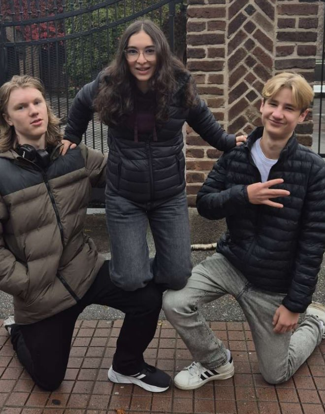
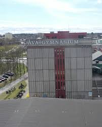

My name is Elliot Desanini. I'm 17 years old and I live in Sweden. I'm
interested in a lot of different things and like learning about new
topics when they catch my attention. I can be a bit lazy at times, but I
try to stay honest and genuine. I like being independent and figuring
things out on my own. I also try not to take things too seriously,
however that is still something i am working on.
I live with my mom Anne, who is 50 years old. She is a very caring and loving person. She works in psychology and also owns her own company, which keeps her busy, but she always makes time for us. My dad Mattias is 40. He is practical, kind, and very skilled at his job as a project manager. Even though my parents are divorced, they both try to be supportive and involved in our lives, and we spend time with each of them regularly.
I am the oldest of four siblings, which comes with its own responsibilities. Bianca is 15. She is very creative and enjoys art, drawing, and making things with her hands. She is shy but always kind, and I often admire her quiet thoughtfulness. Hedvig is 12 and full of energy. She is playful, always moving around, and loves making everyone laugh. Elice is the youngest at 10. She is a little rebellious at times, but she is loving, enjoys clothing and makeup, and has a strong personality that makes her very memorable.
Our family life is pretty typical for an upper-middle-class household.
We don't have extreme routines or unusual traditions, but the little
things matter, like sharing meals, joking together, or just being there
for each other. I feel lucky to grow up in a family where everyone is
supportive, and we all care about one another in our own ways.
I go to Åva Gymnasium and I'm in my second year, studying Info-Media Teknik. I enjoy most of my classes, but my favorites are math, programming, web development, and computer science. Math is by far my favorite subject. I find it fascinating to explore how numbers and patterns work, and I really enjoy solving problems. Our math teacher, Johannes, is excellent and makes the lessons engaging, which makes learning even more fun.


Programming and web development are exciting because I can create and
experiment with ideas, while computer science helps me understand how
technology works. School can be challenging at times, but I like
focusing on subjects that interest me and give me a chance to learn new
skills. These classes let me explore my curiosity and push myself to try
new things, which makes learning feel rewarding.
I have a lot of interests and enjoy spending my free time exploring different things. I like mathematics and technology, and I often spend time learning random topics that catch my curiosity. I am interested in many academic fields and enjoy discovering how different subjects connect. I also like playing games and hanging out with friends, which gives me a chance to relax and have fun. There are always new things I want to try or learn, and I like keeping life varied and interesting.
In the future, I hope to focus more on mathematics, technology, and
software. I want to keep learning and improving in these areas,
exploring new challenges and developing skills that can help me in both
school and later in life. These are the areas I feel most passionate
about, and I enjoy spending time working on projects or ideas related to
them.